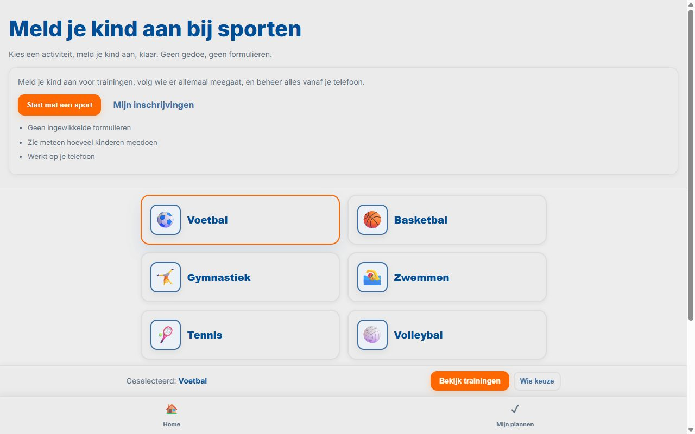

01 / Interactive frontend
FitPlanner
A responsive sports planner for browsing training sessions and managing a child's activity sign-ups.
- HTML
- CSS
- JavaScript
Available for Semester 5 internship
ICT Student & Frontend Developer
I build interactive digital experiences by combining frontend development, visual design and media.
Fontys / ICT student
Eindhoven, NL
Selected work

01 / Interactive frontend
A responsive sports planner for browsing training sessions and managing a child's activity sign-ups.
Storytelling, editing and post-production for a media creation project.
03Brand identity, visual direction and research for a media agency project.
Process
I start by researching the target audience, trends and project goals.
I turn research into prototypes, edits, visuals or frontend experiments.
I ask teachers, students or stakeholders for feedback on my work.
I analyse the feedback, make improvements and validate the result.
About
I am Rayan Fikri, an ICT student focused on frontend development and media creation. I like combining visual design, storytelling and user experience to create clear and modern digital work.
Contact
I am available for internship opportunities, feedback and creative collaborations.